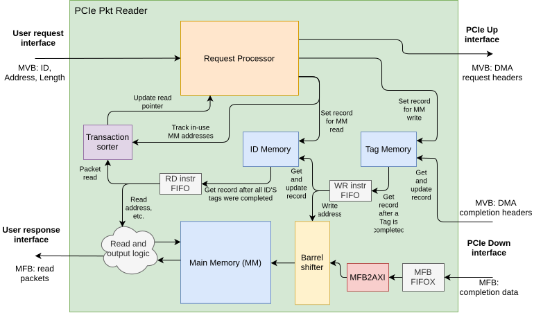

PCIe Packet Reader
- ENTITY PCIE_PKT_READER IS
Basic description
This module accepts request instructions to read data from a memory device over the PCIe. The user provides the Address and Length of the requested data on the RX_USR interface. They also provide an ID, which will identify the read data received on the TX_USR interface. The read data can be output in the same order as the requests were received when RESP_IN_ORDER=True. When RESP_IN_ORDER=False, completed packets are output immediately regardless of request order.
This module’s non-user interfaces (PCIE_UP, PCIE_DOWN) are compatible with the PTC module. The transactions it receives from the PTC module may come in parts and mixed with parts from other read data. However, the parts of one request will arrive in order. This module pieces these parts together and marks them with the ID from the request instruction.
..warning:
GenericsTo ensure correct function, DO NOT reuse IDs until appropriate response is received!
PortsGeneric
Type
Default
Description
=====
MFB parameters
=====
=====
REGIONS
natural
1
USER side. Number of MFB Regions in a word, cannot handle more than 1.
REGION_SIZE
natural
8
BLOCK_SIZE
natural
8
ITEM_WIDTH
natural
8
PCIE_UP_REGIONS
natural
2
PCIE side. Number of DMA headers (MVB Items) in an upstream word.
PCIE_DOWN_REGIONS
natural
2
Number of DMA headers and packets in a downstream word.
PCIE_DOWN_REGION_SIZE
natural
1
PCIE_DOWN_BLOCK_SIZE
natural
8
PCIE_DOWN_ITEM_WIDTH
natural
32
=====
Other parameters
=====
=====
FAKE_READER
boolean
False
Instatniate “fake” PCIe pkt reader when True. Fake variant just generates empty packets of given length while forwarding pkt IDs (in-order only).
PKT_MTU
natural
2**12
Maximum packet size (in bytes).
MEMORY_SIZE
natural
1024
Size of the Main Memory for responses, in number of stored MFB words.
ID_WIDTH
natural
11
PCIE_MRRS_WIDTH
natural
12
PAGE_SIZE
natural
4096
Size of a RAM page (in bytes).
RESP_IN_ORDER
boolean
True
When True, packets are output in the same order as the original requests. May lead to higher latency due to the reordering process. When False, completed packets are output immediately regardless of request order. Automatically True with FAKE_READER=True - unable to do out-of-order.
DEVICE
string
“AGILEX”
Port
Type
Mode
Description
CLK
std_logic
in
RESET
std_logic
in
PCIE_MRRS
std_logic_vector(PCIE_MRRS_WIDTH-1 downto 0)
in
=====
User Request Interface (instruction for which data to read)
=====
=====
USER_REQ_MVB_ID
std_logic_vector(REGIONS*ID_WIDTH-1 downto 0)
in
USER_REQ_MVB_ADDRESS
std_logic_vector(REGIONS*DMA_REQUEST_GLOBAL_W-1 downto 0)
in
USER_REQ_MVB_LENGTH
std_logic_vector(REGIONS*log2(PKT_MTU+1)-1 downto 0)
in
USER_REQ_MVB_VLD
std_logic_vector(REGIONS-1 downto 0)
in
USER_REQ_MVB_SRC_RDY
std_logic
in
USER_REQ_MVB_DST_RDY
std_logic
out
=====
User Response Interface (read data with request’s ID)
=====
=====
USER_RESP_MFB_DATA
std_logic_vector(REGIONS*REGION_SIZE*BLOCK_SIZE*ITEM_WIDTH-1 downto 0)
out
Requested data.
USER_RESP_MFB_ID
std_logic_vector(REGIONS*ID_WIDTH-1 downto 0)
out
ID number that identifies the requested data, valid with SOF.
USER_RESP_MFB_SOF
std_logic_vector(REGIONS-1 downto 0)
out
USER_RESP_MFB_EOF
std_logic_vector(REGIONS-1 downto 0)
out
USER_RESP_MFB_SOF_POS
std_logic_vector(REGIONS*max(1,log2(REGION_SIZE))-1 downto 0)
out
USER_RESP_MFB_EOF_POS
std_logic_vector(REGIONS*max(1,log2(REGION_SIZE*BLOCK_SIZE))-1 downto 0)
out
USER_RESP_MFB_SRC_RDY
std_logic
out
USER_RESP_MFB_DST_RDY
std_logic
in
=====
PCIE Up Interface (sends Read requests to PTC)
=====
=====
PCIE_UP_MVB_DATA
std_logic_vector(PCIE_UP_REGIONS*DMA_UPHDR_WIDTH-1 downto 0)
out
Contains DMA Upstream header
PCIE_UP_MVB_VLD
std_logic_vector(PCIE_UP_REGIONS-1 downto 0)
out
PCIE_UP_MVB_SRC_RDY
std_logic
out
PCIE_UP_MVB_DST_RDY
std_logic
in
=====
PCIE Down Interface (receives Read responses from PTC)
=====
=====
PCIE_DOWN_MVB_DATA
std_logic_vector(PCIE_DOWN_REGIONS*DMA_DOWNHDR_WIDTH-1 downto 0)
in
Contains DMA Downstream header
PCIE_DOWN_MVB_VLD
std_logic_vector(PCIE_DOWN_REGIONS-1 downto 0)
in
PCIE_DOWN_MVB_SRC_RDY
std_logic
in
PCIE_DOWN_MVB_DST_RDY
std_logic
out
PCIE_DOWN_MFB_DATA
std_logic_vector(PCIE_DOWN_REGIONS*PCIE_DOWN_REGION_SIZE*PCIE_DOWN_BLOCK_SIZE*PCIE_DOWN_ITEM_WIDTH-1 downto 0)
in
PCIE_DOWN_MFB_SOF
std_logic_vector(PCIE_DOWN_REGIONS-1 downto 0)
in
PCIE_DOWN_MFB_EOF
std_logic_vector(PCIE_DOWN_REGIONS-1 downto 0)
in
PCIE_DOWN_MFB_SOF_POS
std_logic_vector(PCIE_DOWN_REGIONS*max(1,log2(PCIE_DOWN_REGION_SIZE))-1 downto 0)
in
PCIE_DOWN_MFB_EOF_POS
std_logic_vector(PCIE_DOWN_REGIONS*max(1,log2(PCIE_DOWN_REGION_SIZE*PCIE_DOWN_BLOCK_SIZE))-1 downto 0)
in
PCIE_DOWN_MFB_SRC_RDY
std_logic
in
PCIE_DOWN_MFB_DST_RDY
std_logic
out
Architecture
{kind=link}

Top-level architecture of the PCIe Packet Reader component